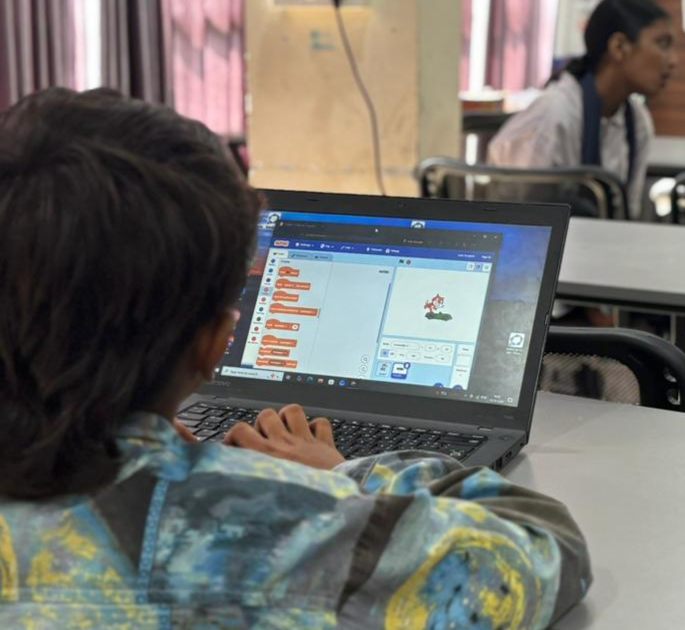
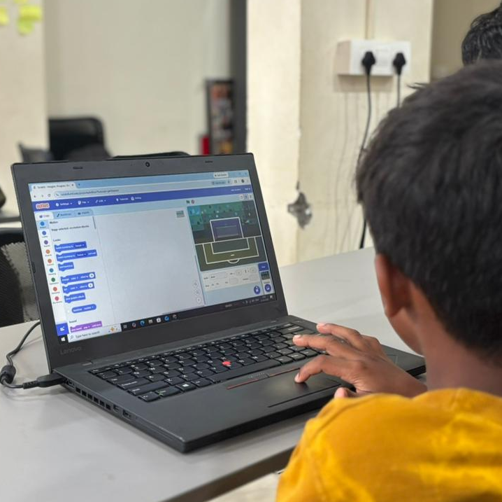

Overview
This session focused on introducing students to the fundamentals of computational logic and problem-solving through game development and animation. Using MIT Scratch, a visual block programming language, the children learned how algorithms define actions and events.
We started with simple movements and progressed to interactive animations. The block-coding environment enabled them to visually structure the code, drag and drop components, and immediately see the results of their logic as their characters came alive on the screen.
Topics
Introduction to the Scratch interface
Understanding coordinate planes (X and Y axis)
Event-driven programming (e.g., executing code on click)
Loops, conditionals, and sequences
Activities
Created simple fun animations from scratch
Programmed basic character movements and interactions
Added background scenes and visual effects
Showcased interactive stories to the rest of the class
Photos


Highlights
- Students quickly grasped programming logic through a playful and visual medium.
- Enabled kids to transform from technology consumers into active creators.
- Encouraged storytelling and creativity using backgrounds and character sprites.
- Highly engaging session with lots of excitement over making games.